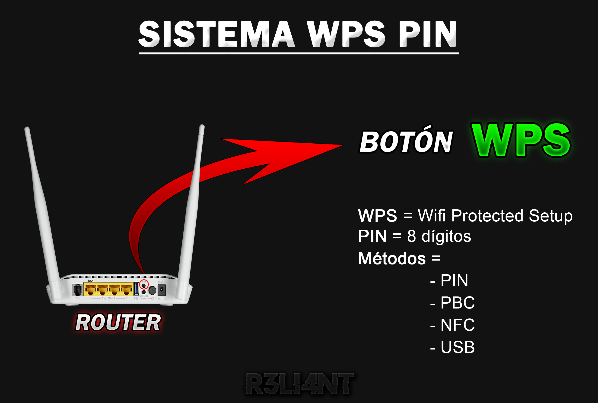

# SISTEMA WPS PIN
WPS (Wifi Protected Setup) es un estándar de red lanzado en el año 2007 cuyo objetivo es facilitar la conexión inalámbrica con tan solo pulsar un botón proveniente del router. De este modo, se evita introducir la contraseña del Wi-Fi (sobre todo si es larga y difícil de recordar) reemplazandola con un PIN de 8 dígito para su fácil acceso. El cifrado WEP no es compatible con WPS, sino con WPA/WPA2. Esto no quiere decir que este basado en brindar seguridad, sino simplemente simplificar el acceso, de hecho, mantenerlo activado puede presentar alto riesgo para los dispositivos que se encuentren conectados a la misma red.
La conexión de WPS es muy sencilla, una de las más comunes es pulsar el botón detrás del router y el emparejamiento con los dispositivos se hará automático. Algunos dispositivos como impresoras, adaptadores Wi-Fi poseen su propio botón WPS, por lo que primero se debe pulsar el del router y luego el del aparato para establecer la conexión. Algunos routers con botón WPS ofrecen un PIN de ocho cifras para simplificar la conexión con dispositivos que no tengan dicho botón, está se debe copiar e introducir manualmente como si fuera la contraseña de la red, que por lo general es más compleja. En caso de no contar con dicho PIN se debe acceder al panel de control del router desde el navegador (http://192.168.1.1) > Seguridad WPS y copiar el PIN (también se puede generar uno nuevo).
WPS contempla cuatro tipo de configuraciones diferentes para el intercambio de credenciales:
-
PIN (Número de identificación personal): Al usuario se le ofrece un PIN de 8 dígitos para que ingrese manualmente en sus dispositivos y establezca conexión sin otorgar la contraseña real del Wi-Fi.
-
PBC (Configuración del botón pulsador): El usuario presionar el botón WPS del punto de acceso (AP) y seguidamente el botón WPS del dispositivo para establecer la autenticación. Cualquier otra estación cercana no autorizada puede ganar acceso.
-
NFC (Comunicaciones de campo cercano): Es una tecnología inalámbrica que permite la comunicación e intercambio de datos entre dos dispositivos sin interrupciones a corta distancia. El dispositivo debe ser colocado cerca del router para intercambiar información
-
USB (Bus Universal en Serie): Es un método de forma física, las credenciales se guardan en una memoria flash USB que luego es introducido en el dispositivo que se desee autenticar a la red.

Riesgos
En primer lugar, al presionar el botón WPS se esta inhabilitando todas las medidas de seguridad configuradas en la conexión, incluyendo el cifrado WPA/WPA2 será de poca utilidad. El PIN consta de 8 dígitos, lo que quiere decir que un ataque de fuerza bruta es más que suficiente para adivinarlo y acceder a la red. Mientras que el ataque WPS Pixie Dust se centra en capturar el intercambio de paquetes entre el router víctima y el atacante, para posteriormente intentar crackear el PIN sin necesidad de conexión (offline) en tan solo un par de segundos. El PIN es dividido por dos claves precompartidas por cada PSK (mitad y mitad), las solicitudes del AP funcionan de la siguiente manera:
-
Envíos informáticos - EAPOL Start: El cliente y el dispositivo de acceso utilizan paquetes EAP para transportar información de autenticación. El cliente envía un mensaje EAPOL-Start para iniciar la autenticación 802.1X en el dispositivo de acceso.
-
Envíos del enrutador: solicitud EAP para la identidad: El autenticador envía una solicitud EAP para la identidad del solicitante de conexión (dispositivo cliente). El solicitante responde al autenticador con una Respuesta de identidad EAP que contiene la identidad (nombre de usuario) utilizada para la autenticación.
-
Envíos del enrutador: solicitud EAP / Envíos por computadora: respuesta EAP: Los marcos de solicitud EAP y los marcos de respuesta EAP se transmiten de un lado a otro hasta que el servidor de autenticación envía un mensaje EAP-Success al switch. El autenticador envía solicitudes al sistema en busca de acceso y las respuestas otorgan o niegan el acceso.
Estas solicitudes son repetidas continuamente antes de que se llegue a enviar las credenciales, durante el proceso se captura la clave pública de Diffie Hellman del miembro y del registrador, y dos hashes del PIN WPS (PSK1, PSK2). Luego se realiza la fuerza bruta contra los hashes y como resultado se agrupan los 4 dígitos de cada clave.
# Identificar puntos de accesos habilitados para WPS
Con el comando wash + -i + interfaz podemos identificar aquellos puntos de acceso de nuestro alrededor que tienen habilitado el sistema WPS.

ONESHOT | Cracking WPS PIN - Pixie Dust
OneShot es un script hecho en Python para realizar ataque de Pixie Dust sin necesidad de cambiar el adaptador de red a modo monitor. Se utiliza wpa_supplicant para obtener los datos requeridos.
Instalar en Debian:
$ > sudo apt install -y python3 wpasupplicant iw wget
> sudo apt install -y pixiewps
> git clone --depth 1 https://github.com/drygdryg/OneShot && cd OneShot-i: Nombre de la interfaz a utilizar (Ej: wlan0).
-b: Dirección MAC del punto de acceso (AP).
-K: Modo de ataque Pixie Dust
Ejecutamos el script y esperamos que capture las claves y realice el crackeo automático:
$ python3 oneshot.py -i wlan0 -b XX:XX:XX:XX:XX:XX -K

PIN crackeado = 49011838
Duración = 244 milisegundos
# WIFITE | Cracking WPS PIN
Wifite es un script automatizado que ejecuta herramientas de auditoria inalámbrica para probar la seguridad de una red Wi-Fi. Esta hecho en Python y su uso sencillo hace que cualquiera sea capaz de auditar su propia red. Contiene las siguientes funciones y aplicaciones:
-
Reaver | Bully: se activa de manera predeterminada, pero se puede especificar de igual manera con los parámetros
--reavery/o--bully. -
Captura el handshake, lo válida, lo extrae y lo guarda de forma automática.
-
Soporta tecnología 5Ghz
-
Utiliza la suite de aircrack-ng y sus derivados comandos para habilitar el modo monitor, descifrar archivos
.cap, capturar paquetes, falsificar archivos de captura y demás. -
Tshark: Detecta redes WPS e inspecciona el handshake.
-
Pyrit | Cowpatty: Detectan las captura del handshake.
Instalar en Debian:
$ > git clone https://github.com/derv82/wifite2.git && cd wifite2
> sudo python setup.py install
> sudo ./Wifite.pyEl script automáticamente colocará nuestra interfaz en modo monitor y seguidamente empezará a reconocer las redes de nuestro alrededor. Aquellas redes que tengan habilitado WPS (yes) son las que podemos atacar, mientras mayor sea el alcance, mejor es su probabilidad de crackearlo. Una vez identificada, pulsamos CTRL + C y seleccionamos el punto de acceso:

El script comenzará atacando WPS primero, porque es más rápido de crackear y no requiere capturar el handshake, lo que también indica que no es preciso contar con clientes conectados. Utiliza el ataque Pixie Dust para descifrar el PIN y en caso de tener éxito, obtendrá una pantalla como está:

Cabe recalcar que, wifite también descifra la contraseña del punto de acceso (WPA/PSK) solo que en mi caso lo pause cuando obtuvo el PIN de WPS para acelerar el proceso. Los datos son almacenados y estructurados en sintaxis JSON en el archivo cracked.json.

# Detalles
Al ingresar el PIN como contraseña se le otorgará acceso a la red y podrá navegar en Internet libremente. El router cuyo ESSID es TP-Link_4C74, es propiedad de mi vecino y por lo visto no le ha cambiado el nombre, supongo que tampoco lo hizo con el panel de control. Los routers TP-Link tienen usuario y contraseña por defecto que establece el proveedor de servicio, mismo que se puede obtener con un par de búsquedas en Google.


Efectivamente, ahora tengo el control total del router y no solo puedo habilitar o deshabilitar el WPS, sino también cambiar la clave del cifrado WPA/WPA2 y realizar una lista de filtrado MAC para expulsar a los dueños y ser el único cliente de la red. Esto es con fines educativos, está diseñado para demostrar como un usuario no autorizado puede violar la red de un tercero y apropiarse del router con tan solo conseguir el PIN del WPS. En este escenario, el atacante al dueñarse del router puede infectar todos los dispositivos que estén conectados a la misma red. El acceso no autorizado a una red constituye a un delito y está penado por la Ley.

# MITIGAR RIESGOS
Ante todo, desactivar el sistema WPS desde la configuración del router o llamar al ISP en caso de que la opción no aparezca, solamente cuando haya demasiados usuarios queriéndose conectar a la red y la contraseña sea muy larga, entonces lo mejor es compartir el PIN. Utilizar el cifrado WPA/WPA2 para mayor protección y emplear una contraseña compleja con la combinación de caracteres como números, símbolos, frases, etc. A menudo es recomendable ejecutar un proceso de Hardening (endurecimiento) a nivel red inalámbrica para establecer medidas de seguridad con el objetivo de estar prevenidos ante un ataque informático, no solo a nivel red, sino también a sistema.